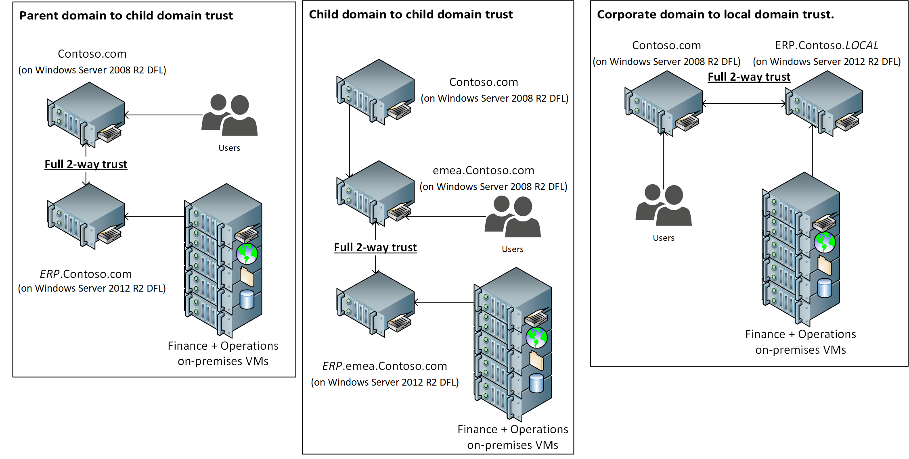

System requirements for on-premises deployments
This topic lists the system requirements for the current version of Microsoft Dynamics 365 Finance + Operations (on-premises) deployments. Before you install, when this step is appropriate, verify that the system that you're working with meets or exceeds the minimum network, hardware, and software requirements.
Important
Dynamics 365 Finance + Operations (on-premises) deployments are not supported on any public cloud infrastructure, including Azure.
Network requirements
Dynamics 365 Finance + Operations (on-premises) can work on networks that use Internet Protocol Version 4 (IPv4) or Internet Protocol Version 6 (IPv6). Consider the network environment when you plan your system, and use the following guidelines.
Network response time
The following table lists the minimum network requirements for the connection between the web browser and Application Object Server (AOS), and for the connection between AOS and the database in an on-premises system.
| Value | Web browser to AOS | AOS to database |
|---|---|---|
| Bandwidth | 50 kilobytes per second (KBps) per user | 100 megabytes per second (MBps) |
| Latency | Less than 250–300 milliseconds (ms) | Less than 1 ms (local area network [LAN] only). AOS and the database must be co-located. |
- Finance + Operations is designed for networks that have a latency of 250–300 milliseconds (ms) or less. This latency is the latency from a browser client to the datacenter that hosts Finance + Operations.
- Bandwidth requirements depend on your scenario. Typical scenarios require a bandwidth of more than 50 KBps between the browser and the server. However, we recommend higher bandwidth for scenarios that have high payload requirements, such as scenarios that involve workspaces or extensive customization. The specific amount of bandwidth depends on use.
Deployments where AOS and the Microsoft SQL Server database are in different datacenters aren't supported. AOS and the SQL Server database must be co-located.
In general, Finance + Operations is optimized to reduce browser-to-server round trips. The number of round trips from a browser client to the datacenter is either zero or one for each user interaction, and the payload is compressed.
Warning
Don't calculate bandwidth requirements from a client location by multiplying the number of users by the minimum bandwidth requirements. The concurrent usage of a given location is very difficult to calculate. We recommend that you use a real-life simulation against a non-production environment as the best gauge of performance for your specific case.
LAN environments
In LAN environments, Microsoft Remote Desktop in Microsoft Windows Server isn't required in order to connect to Finance + Operations. However, Remote Desktop might be required for servicing operations on the virtual machines (VMs) that make up the server deployments.
WAN environments
In wide area network (WAN) environments, Remote Desktop in Windows Server isn't required in order to connect to Finance + Operations.
Internet connectivity requirements
Finance + Operations doesn't require internet connectivity from user workstations. However, some features won't be available if there is no internet connectivity.
| Browser client | An intranet scenario without internet connectivity is a design point for the on-premises deployment option. Some features that require cloud services won't be available, such as Help and Task guide libraries in Microsoft Dynamics Lifecycle Services (LCS). |
| Server | The AOS or Microsoft Azure Service Fabric tier must be able to communicate with LCS. The on-premises browser-based client doesn't require internet access. |
| Telemetry | Telemetry data might be lost if there are long interruptions in connectivity. Interruptions in connectivity to LCS don't affect the on-premises application functionality. |
| LCS | Connectivity to LCS is required for deployment, code deployment, and servicing operations. |
Telemetry data transfer to the cloud
Most telemetry data is stored locally and can be accessed by using Event Viewer in Microsoft Windows. A small subset of telemetry events is transferred to the Microsoft telemetry pipeline in the cloud for diagnostics. Customer data and user-identifiable data aren't part of the telemetry data that is sent to Microsoft. VM names are sent to Microsoft to help with environment management and diagnostics from the LCS portal.
Domain requirements
Consider the following domain requirements when you install Finance + Operations:
- VMs that host Finance + Operations components must belong to an Active Directory domain. Active Directory Domain Services (AD DS) must be configured in native mode.
- VMs that run Finance + Operations components must have access to each other. This access is configured in AD DS.
- The domain controller must be Microsoft Windows Server 2012 R2 or later, and the domain functional level must be 2012 R2 or more.
Full 2-way trust
For compatibility with corporate domain controllers on Windows Server 2008 R2 domain functional level (DFL), a full 2-way trust between the Windows Server 2008 R2 DFL user domain and the Windows Server 2012 R2 DFL Finance + Operations service domain is supported in Platform update 33 and later.
This means that users of the Finance + Operations (on-premises) application will come from the Windows Server 2008 R2 DFL domain, and the resources and service accounts hosting the Finance + Operations (on-premises) infrastructure and services will come from the Windows Server 2012 R2 DFL domain.
Examples for a full 2-way trust setup could be.
Known limitations with using the full 2-way trust setup
- Import of security groups from the Windows Server 2008 R2 user domain is not supported.
Hardware requirements
This section describes the hardware that is required in order to run Finance + Operations.
The actual hardware requirements vary, based on the system configuration, the data composition, and the features that you decide to use. Here are some of the factors that can affect the choice of appropriate hardware:
- The number of transactions per hour
- The number of concurrent users
Minimum infrastructure requirements
Finance + Operations uses Service Fabric to host the AOS, Batch, Data management, Management reporter, and Environment orchestrator services.
SQL Server must have a high-availability HADRON setup that has at least two nodes for production use.
The following illustration shows the minimum number of nodes that is recommended for your Service Fabric cluster.
{kind=link}
Processor and RAM requirements
The following tables list the number of processors and the amount of random-access memory (RAM) that are required for each role that is required in order to run this deployment option. For more information, see the recommended minimum requirements for a Service Fabric standalone cluster in Plan and prepare your Service Fabric cluster.
Note
If other Microsoft software is installed on the same computer, the system must also comply with the hardware requirements for that software. If other server applications are installed on the same computer as AOS, we recommend that you limit those server applications 1 gigabyte (GB) of RAM.
Sizing by role and topology type
| Topology | Role (node type) | Recommended processor cores | Recommended memory (GB) |
|---|---|---|---|
| Production | AOS, Data management, Batch | 8 | 24 |
| Management Reporter | 4 | 16 | |
| SQL Server Reporting Services | 4 | 16 | |
| Orchestrator | 4 | 16 | |
| SQL Server | 8 | 32 | |
| Sandbox | AOS, Data management, Batch | 4 | 24 |
| Management Reporter | 4 | 16 | |
| SQL Server Reporting Services | 4 | 16 | |
| Orchestrator | 4 | 16 | |
| SQL Server | 8 | 32 |
Minimum sizing estimates for production and sandbox deployments
| Topology | Role | Number of instances |
|---|---|---|
| Production | AOS (Data management, Batch) | 3 |
| Management Reporter | 2 | |
| SQL Server Reporting Services | 1 | |
| Orchestrator** | 3 | |
| SQL Server | 2 | |
| Sandbox | AOS, Data management, Batch | 2 |
| Management Reporter | 1 | |
| SQL Server Reporting Services | 1 | |
| Orchestrator | 3 | |
| SQL Server | 1 | |
| Summary for production and sandbox topologies | 19 |
* The numbers in this table are being validated by our preview customers and might be adjusted based on the feedback from those customers.
** Orchestrator is designated as the primary node type and will also be used to run the Service Fabric services.
Initial estimates for the back-end SQL Server and AD DS
| Role | VMs/instances | Cores | Total cores | Memory per instance (GB) | Total memory (GB) | |
|---|---|---|---|---|---|---|
| Shared infrastructure | SQL Server* | 2 | 8 | 16 | 32 | 64 |
| File server/Storage area network/Highly available storage | The back-end storage must be based on solid-state drives (SSDs) on a runtime storage area network (SAN).
Size and input/output operations per second (IOPS) throughput is based on the size of the workload. |
|||||
| Active Directory | 3 | 4 | 12 | 16 | 48 | |
| Summary for shared infrastructure | 5 | 28 | 112 | |||
* SQL Server sizes are highly dependent on workloads. For more information, see Hardware sizing requirements for on-premises environments. Separate SQL Server machines for sandbox and production environments must be used. However, SQL Server can be shared in all sandbox environments.
Storage
AOS – Finance + Operations uses a Server Message Block (SMB) 3.0 share to store unstructured data. For more information, see Storage Spaces Direct in Windows Server 2016.
SQL – The following options are viable:
- A highly available SSD setup
- A SAN that is optimized for online transaction processing (OLTP) throughputs
- High-performance direct-attached storage (DAS)
SQL Server and data management IOPS – The storage for both data management and SQL Server should have at least 2,000 IOPS. Production IOPS depends on many factors. For more information, see Hardware sizing requirements for on-premises environments.
VM IOPS – Each VM should have at least 100 write IOPS.
Virtual host requirements
When you set up the virtual hosts for an environment, see the guidelines in Plan and prepare your Service Fabric cluster and Describing a service fabric cluster. Each virtual host should have enough cores for the infrastructure that is being sized. Multiple advanced configurations are possible, where SQL Server resides on physical hardware but everything else is virtualized. If SQL Server is virtualized, the disk subsystem should be a fast SAN or the equivalent. In all cases, make sure that the basic setup of the virtual host is highly available and redundant. In all cases, when virtualization is used, no VM snapshots should be taken.
Finance + Operations falls under Microsoft's standard support policy regarding operation on non-Microsoft virtualization platforms – specifically VMWare. For more information, read Support policy for Microsoft software. In short, we support our products in this environment, but if we are asked to investigate an issue, we may ask the customer to first reproduce the problem without the virtualization platform or on the Microsoft virtualization platform.
Software requirements for all server computers
The following software must be present on a computer before any Finance + Operations components can be installed:
- The Microsoft .NET Framework. See Deployment setup for version information.
- Service Fabric
For more information, see Plan and prepare your Service Fabric cluster.
Supported server operating systems
The following table lists the server operating systems that are supported.
| Operating system | Notes |
|---|---|
| Microsoft Windows Server 2016 Datacenter or Standard | These requirements are for the database and the Service Fabric cluster that hosts AOS. Only en-US OS installations are supported. |
Software requirements for database servers
- Only 64-bit versions of SQL Server 2016 are supported.
- Only SQL_Latin1_General_CP1_CI_AS is valid for the server and database collation. For more information about how to select a collation for a SQL Server database, see the SQL Server documentation.
- In a production environment, we recommend that you install the latest cumulative update (CU) for the version of SQL Server that you're using.
The following table lists the SQL Server versions that are supported for the databases. For more information, see the minimum hardware requirements for SQL Server.
| Requirement | Notes |
|---|---|
| Microsoft SQL Server 2016 Standard Edition or Enterprise Edition | For the hardware requirements for SQL Server 2016, see Hardware and Software Requirements for Installing SQL Server 2016. |
Software requirements for Application Object Server (AOS)
- SQL Server Integration Services (SSIS)
Software requirements for Reporting Server (BI)
- SQL Server Reporting Services (SSRS)
Software requirements for client computers
Users can access Finance + Operations by using the most recent versions of these popular browsers:
- Microsoft Edge (recommended: Chromium-based Edge)
- Google Chrome
- Apple Safari
- Internet Explorer 11 (deprecated, not recommended)
Note
For optimal performance and an optimal experience, we recommend that you use the latest version of a modern browser, especially Microsoft Edge.
Internal Explorer deprecation
Support for Internet Explorer 11 was deprecated in December 2020, with end of support for the browser occurring in August 2021. For more information, see Internet Explorer deprecation announcement.
Starting in version 10.0.20, users accessing Finance and Operations apps with Internal Explorer (IE) will start seeing notifications about the end of support for that browser. Before August 17, 2021, IE users will see an informational message that IE support is soon ending. After that date, IE users will see a warning that support has officially ended. Organizations are encouraged to keep these notifications on unless IE is mandated for your users, in which case you can choose to suppress these notifications by disabling the Internet Explorer end-of-support notifications feature and relying on internal processes for migrating your user base to Microsoft Edge or another modern browser.
The current target for blocking IE usage within Finance and Operations app is April 2022. To prepare organizations and users for that block, starting in January 2022, IE users will start seeing a non-dismissible error message indicating that IE support will soon be blocked. This error message is not controlled by the Internet Explorer end-of-support notifications feature, and customers will need to contact Microsoft Support if this message needs to be suppressed for their organization.
Special considerations
- To enable Task Recorder to capture screenshots and include them in Microsoft Word documents that are generated, you must install a pre-release Chrome extension.
- The Workflow Editor and Report Designer for Financial reporting are started as ClickOnce applications. They require a 64-bit-compatible operating system. Only Microsoft Edge and Internet Explorer (on a supported version of Microsoft Windows) support ClickOnce applications out of the box. If you're using Chrome, you must install a ClickOnce extension, such as Meta4 to use ClickOnce applications. If you use Chrome in incognito mode, make sure that the ClickOnce extension is also enabled for incognito mode.
- To preview PDF files, we recommend that you use browsers such as Microsoft Edge (latest publicly available version) on Windows 10, or Google Chrome (latest publicly available version) on Windows 10, Windows 8.1, Windows 8, Windows 7, or Google Nexus 10 tablet.
Software requirements for Active Directory Federation Services
Active Directory Federation Services (AD FS) on Windows Server 2016 is required.
The domain controller must be Windows Server 2012 R2 or later, and the domain functional level must be 2012 R2 or more. For more information about domain functional levels, see the following pages:
- What Are Active Directory Functional Levels
- Understanding Active Directory Domain Services Functional Levels
- Full 2-way trust
Supported Microsoft Office applications
The following Microsoft Office applications are supported in on-premises deployments:
- To run the Microsoft Excel and Microsoft Word add-ins, you must have Microsoft Office 2016 for Windows (or newer) installed. For more information about version requirements, see Troubleshoot the Office integration.
- To view documents that are generated by the Export to Excel or Export to Word functionality, you must have Microsoft Office 2007 or later installed.
Hardware and software requirements for Commerce components
Currently, Finance + Operations doesn't include the Commerce components.
[!include[footer-include](../../../includes/footer-banner.md)]